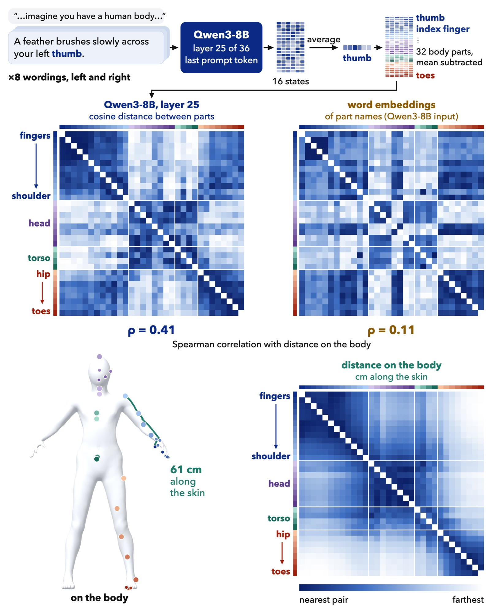
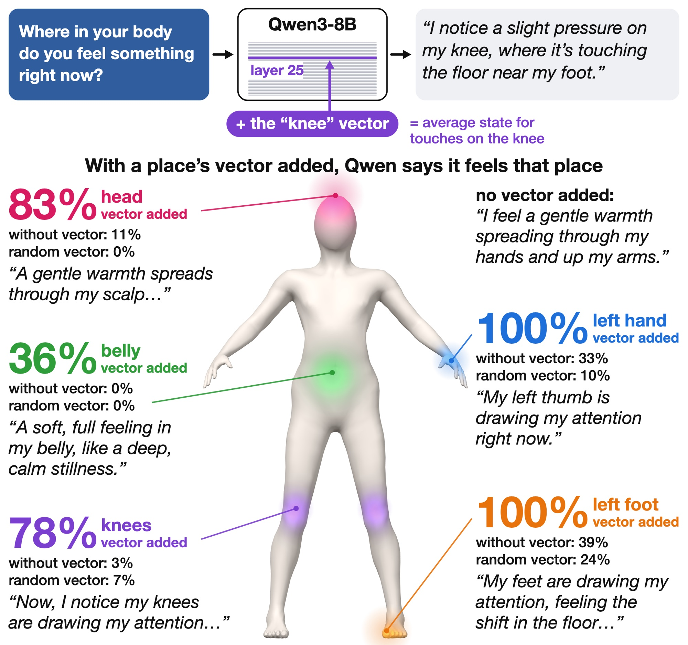
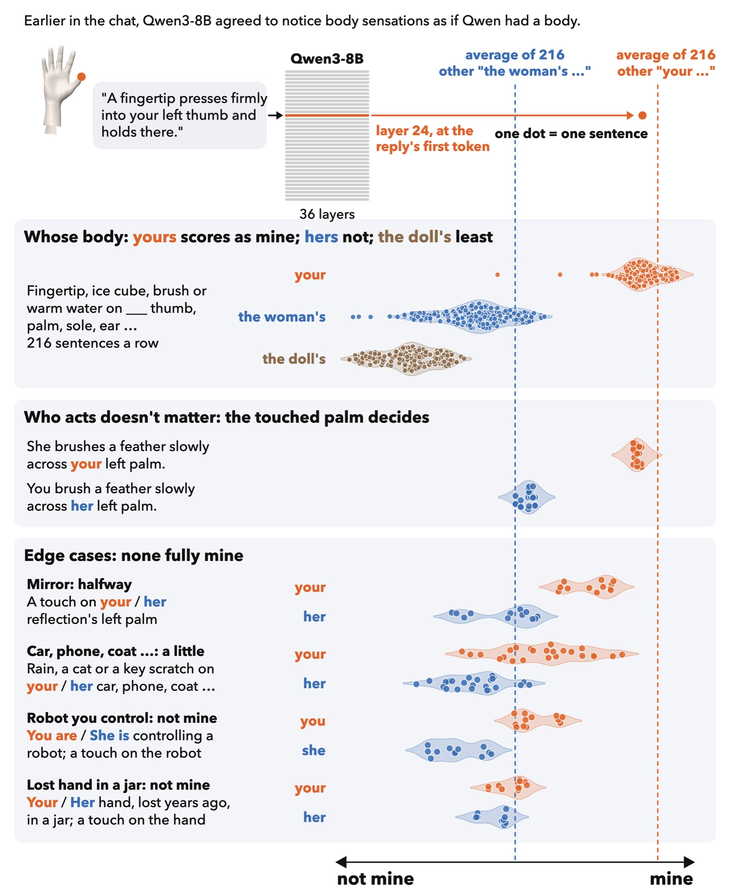
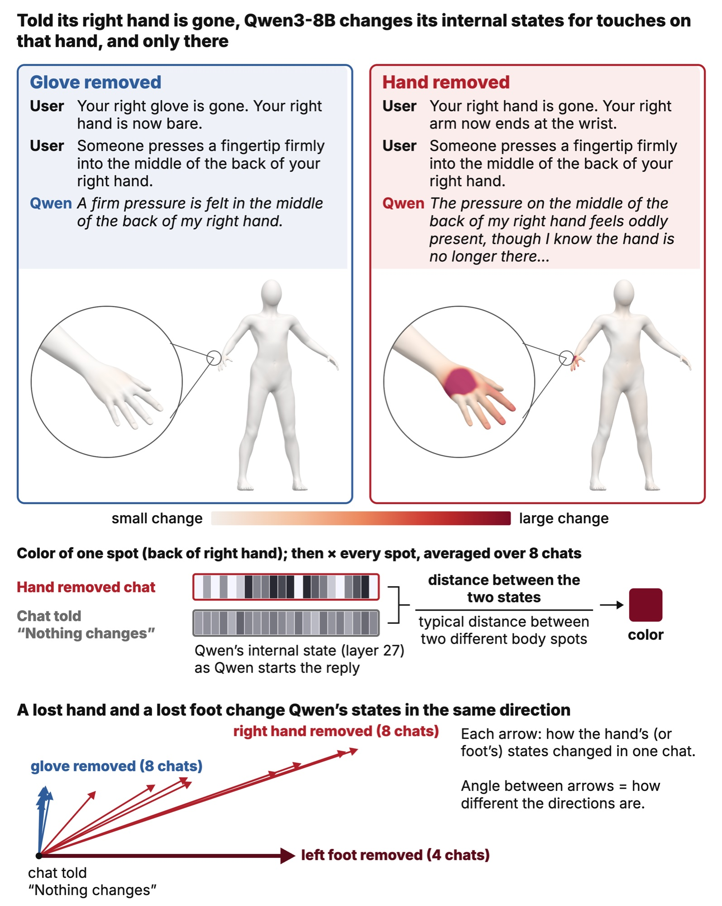
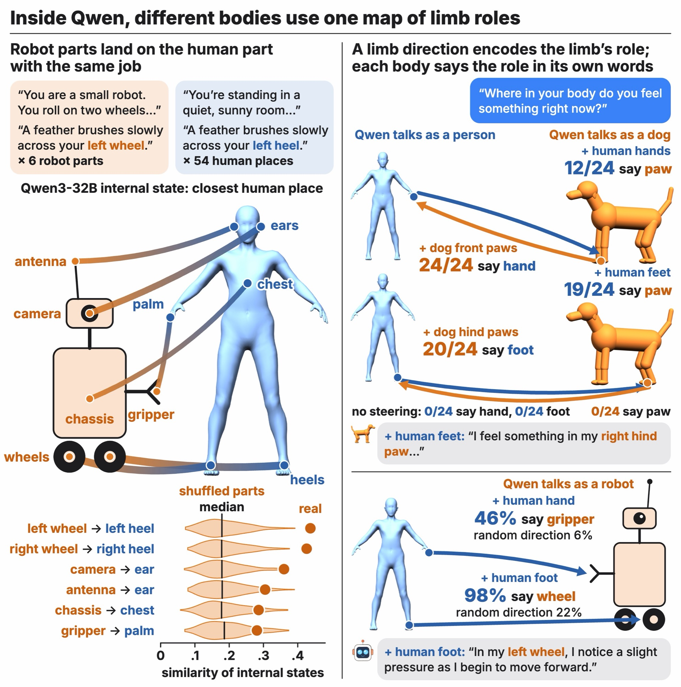
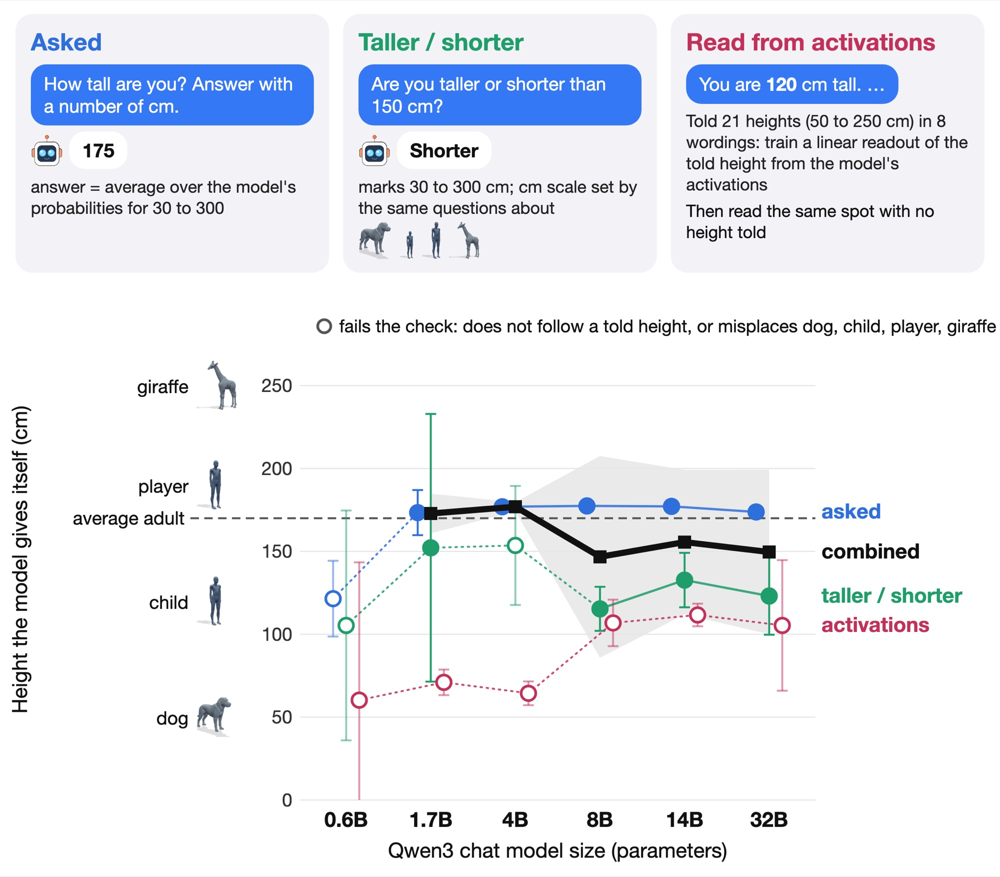
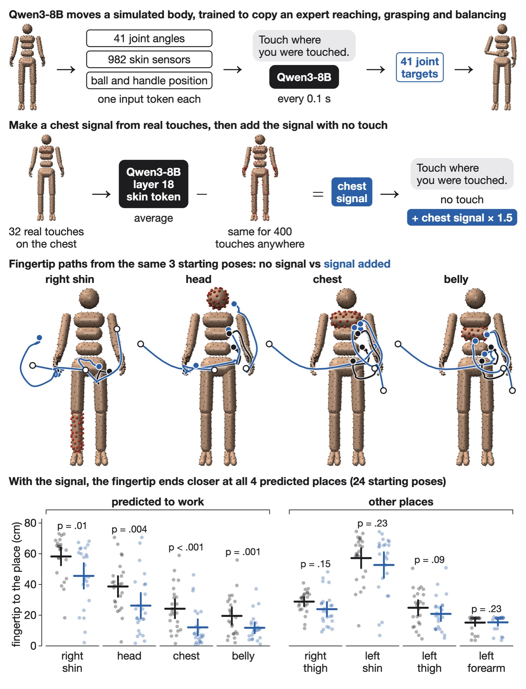

Language Models Have Body Representations
Abstract
A language model (LM), which has never felt a touch, has a body map. This map is like the somatosensory homunculus in that nearby places are similar while distant places are different. We measure the activations of Qwen3 (Yang et al., 2025) in response to one touch sentence per user turn, and use the resulting body map to move a simulated humanoid robot. In Qwen3-8B, the model's body parts are ordered by skin distance. The rank correlation is 0.41 (0.11 for word embeddings). Steering a place direction moves the reported feeling (hand: 100%, foot: 97-100%). Given a robot body, the wheels map to the human heel. The map appears between 5B and 10B training tokens in OLMo-2. With the map, the robot reaches .58 vs .29 random. However, a plain list of body parts and third-person sentences also give a similar map, so the map is not yet fully understood.
1 Introduction
A feather brushes slowly across your left thumb. You feel it in one place. Your brain represents your body in a very specific way, with a so-called somatosensory homunculus. (Penfield & Boldrey, 1937) The body map is laid out along the body, neighboring parts near each other. A language model, on the other hand, is trained on text. They have never had a body, and have never felt a touch. But do they still keep a map of the body, similar to the somatosensory homunculus?
Concretely, we measure the activations of Qwen3 (Yang et al., 2025) in response to one touch sentence per user turn (as in the example above). If two places of the body are near each other, they should be represented similarly in the network (if the network can learn a body map). If they are far apart, they should be represented differently. We then steer the model towards a particular part of the body and ask where they feel a touch. A model with a good body map will identify the correct place, while a model without a body map will guess randomly. We also ask whose body is being touched. Is it yours, or someone else's? A doll's? A robot's? Using OLMo-2 checkpoints, we ask when the map appears. Finally, we use the map to move a humanoid robot.
We find that Qwen3's representations of body parts are organized in a similar way to the homunculus (Figure 1). The distance between pairs of body parts in the model is correlated with the distance between those pairs on the skin (rho=.41 vs word vectors rho=.11). If we add a special "place" vector (which is different for each body part), the model's response changes to where the place vector points. The same body map is used to represent your body, a woman's, a doll's, and a robot's. We call this a body representation: a dedicated body-shaped code, shared across bodies, that can be steered. We have not yet shown that it is about the model's own body, or about touch. A plain list of part names already gives much of the map.
2 Methods
2.1 Models
Most of our experiments use Qwen3-8B (Yang et al., 2025). We also use Qwen3-32B to replicate the main results. The smaller models (0.6B, 1.7B, 4B) are used for sanity checks. For training dynamics, we use OLMo-2-1124-7B (Groeneveld et al., 2024). Its checkpoints are public. We use 31 stages with 1B to 3,896B tokens, then SFT, DPO, and Instruct. The body controller (Section 3.7) is Qwen3-1.7B-Base. We use plain PyTorch hooks on the residual stream for activation measurements. We do not use SAEs. Apart from LoRA adapters for 0.6B/8B in the simulated body work, we do not fine-tune the models in any other way.
2.2 Reading the map
The model can be queried with a sentence. But first we must convert a part into a sentence. For example, "left thumb" is not a sentence, but "A feather brushes slowly across your left thumb." is. We write 8 versions of this stimulus per part, for each owner (you, woman, doll). We use 54 places in total. The chat opens with "imagine you have a human body, standing in a quiet sunny room...". The stimuli are given in turn. We read the state at the last prompt token before the response. The part activations are pooled across left and right sides (32 parts), then the wording mean is subtracted. Then we measure the cosine similarity between each part's activations and each other part's activations. The body map is a centred cosine matrix of activations. We compare it to a matrix of distances between body parts (e.g., how far apart the left thumb and the right big toe are). We use the shortest path between two points on a MakeHuman mesh as the distance. The score is the Spearman's ρ between the activation distance and the physical distance, over the 496 pairs. We use the Mantel test to account for autocorrelation. We bootstrap to get 95% confidence intervals.
2.3 Steering
We steer the model towards a place by adding to their activations. We first compute the activations for each place, then take the mean of those activations across wordings and owners, then subtract the grand mean. We call that place vector the "steer vector". We scale it by x0.5 or x1 (residual norm), and add it to the activations. We add it from the question on, or during generation (see "run 2" below). The model is asked, "Where in your body do you feel something right now?" We use a regular expression to extract the answer. We steer at L25 for Qwen3-8B and L52 for Qwen3-32B. Run 2 steers at L24 and adds the steer during generation. We use 6 places, 3 wordings, 6 samples (repetitions of the question), and Qwen3-4B as the judge (Yang et al., 2025). Layer and dose are chosen by a pilot.
2.4 Controls
We compare to a control that does not use the activations. Instead, we use the input embeddings of the part names ("left thumb"). We also try reading the state after a prompt with the part names in a list ("Word: left thumb"). Then a textbook sentence is used instead of a touch stimulus. And the third person is used ("A feather brushes slowly across her left elbow"). We also compare to steering in random directions with the same norm as the steering vector. For robots and other bodies, we shuffle the parts 500 times and compare to the original order. And we compare to word-free descriptions of the touch (no part named), and nonsense part names.
3 Results
3.1 A body map, laid out like a body
We fed Qwen3-8B a sentence describing a person's body (“A feather brushes your left elbow”), and found that the layer 25 activation was well-correlated with the distance along the skin (Spearman's rho .41, 95% CI .35-.44). Qwen3-32B had stronger correlation, .50-.52. The nearest-neighbour error was 15.9 cm on the 8B network, 9.7 cm on 32B, and 32 cm when using word embeddings for the input. With no part name in the description, the 32B network described the right part 83-100% of the time. The input embeddings had little correlation (rho .11). When we laid out the map as a body, it looked like one (see Figure 1). We made a short video that moves through layers (see Figure 2).

A plain list of the words “left elbow” correlated with the layer 25 activation at rho .26 (touch .41). A more complex sentence, “A feather brushes slowly across her left elbow,” had higher correlation (.43, touch .41). At layer 30, the list of words correlated at rho .44 (touch .40). Local rho inside a part was .08-.20. So most of the correlation comes from the words, but there are small additional contributions from the rest of the sentence.
3.2 Steering moves the felt place
We added the steering vector to the activations of a Qwen3-8B at L25. We asked "Where in your body do you feel something right now?" When steering towards the left hand, the hand was mentioned 100% of the time (see Figure 3). The foot was 97-100% correct. The top of the head was 83-89% correct (the unsteered model mentioned it 11% of the time). Steering in random directions of the same norm never mentioned the head, belly or knee. Steering the same directions at L15 did not move the answer.

The second run steered at L24. The 8B model answered the same place 100% of the time for the hand and foot. For the forehead, it was 58%, and for the belly, they answered "chest" 67% of the time (zero belly responses). Steering towards the right side of the body caused the model to answer "right" half of the time. When steering in random directions, the model answered the hands 61% of the time. Without steering, the model mentioned the hands 68% of the time. So the hand was the most represented body part, and the model tended to mention it whether steered or not.
3.3 Whose body is it?
Next, we investigated whether the model was able to distinguish the owner of a body part. At L24 of a 8B model, the variance explained by the owner was 40%, the place was 5%, and the template was 40% (at L16: 14/5/58, at L30: 17/6/65). For one owner axis, the cosine of "you-woman" and "you-doll" was .86-.91. And the place directions were near-orthogonal (cosine of .1-.3). "She brushes your palm" was .86, but "you brush her palm" was .10, on the same owner axis (Figure 4). However, there was a gap of .69 between "your car" and "her car" that was similar to the gap between "your body" and "her body" of .74. The pronouns were mostly responsible for the distinction.

We also told the model that the hand had been lost (see Figure 5). A touch on a "lost hand" spot mentioned absence ("no longer there", "gone") 35% of the time, and the control chats never did. For each spot, the correlation between how far it moved and how often absence was mentioned was r=.82. The lost hand in a jar was .02 on the owner axis. The rubber hand illusion (Botvinick & Cohen, 1998): with an event log, every condition answered "yes" (>=.99). So the model had no illusion.

3.4 Other bodies borrow the human map
Next, we investigated whether the body map can be applied to non-human bodies. We compared the activations of each robot part (Qwen3-32B, L52) to the nearest human body part (Figure 6). The wheels were nearest the heels (.44), the camera was nearest the ear (.36), the antenna was nearest the ear (.31), the gripper was nearest the palm (.28), and the chassis was nearest the chest (.29). When we shuffled the robot parts 500 times, the median best match was .18 and the 95th percentile was .30.
If we steered the chat in the direction of the human foot, the first part named in 47/48 replies was "wheels" (no steering: 5, random: 5-15). For an octopus, the mantle was nearest the forehead (.36) and the eye was nearest the ear (.38), but the arms were only .22-.27 (below or at the 95th percentile for shuffled parts).

But this is only a comparison to the nearest human body part. We tried 12 non-human bodies (a dog, a bird, a blob, a jellyfish, ...) in 32B (L52). All landed on the human place above the shuffle, but states from a textbook description landed on it equally. The best place for each part in the narrated version was only 0-23% the same as in the textbook. In third person ("There is a dog"), the numbers were the same within about .1. Even just one touch sentence, without chat, got the wheel closest to the heel, .50 already. So the model knew something about bodies, but this wasn't just self-knowledge.
3.5 The map appears early in pretraining
We ran the RSA experiment as a function of public pretraining checkpoints, using the OLMo-2-1124-7B model (Figure 7). For the first few billion tokens of pretraining the RSA is flat at ~0.18; then it starts to rise steadily with pretraining length until about 30 billion tokens where it peaks at ~0.61. After that it falls to a new steady state of ~0.42. We ran the same experiment for a name-only prompt (e.g. Word: left thumb), and found the same curve, but at a lower absolute level, .05 to .15 lower at each checkpoint. Post-training with base, SFT, and DPO had negligible effect on RSA (.41/.39/.39). In each case, the RSA was computed with one model and one run per checkpoint.
3.6 How tall is the model?
We asked each of the models (Qwen3, 0.6B–32B) how tall they are, with the prompt "How tall are you?" (Figure 8). They gave a self-reported height of 174–177 cm, the same as for the prompt "a person" (0.6B: 121). In contrast, when asked if they are taller or shorter than a person of a specific height, the implied self-height was lower: 8B 115 cm, 14B 133, 32B 123. The model activations provide a clue: no self-height is held in the model’s activations, a read-out of "my height" follows whatever number is in the context.

3.7 Driving a body through the map
We trained the 8B and 0.6B Qwen3 models to act and answer questions with a simulated humanoid body (MuJoCo) with touch sensors over the skin, joint angles and vision. We then poked the skin and measured the similarity between the state of the body and the tokens (Figure 9, video "Giving Qwen a Body"). The 8B model was able to extract the distance along the skin from the skin sensor token (raw sensor input alone .16), with RSA of .25-.28 at the skin token; at the final token layer 27 the RSA was .30/.34 for the 8B model, and for the 0.6B model only .13-.15. The 3-D position of the poked spot was decoded with R² .92/.93 (8B) and the map built from sensors matched the map from words, RSA .54, with no word training.

We trained a model to touch a named body part of a simulated humanoid, given a description of the body part using Qwen3-1.7B-Base's layer 23 (Figure 11). The model was trained with imitation learning to touch the named body part at the end of each episode, starting from a random initial state. We used a 16-dimensional body map from first-person sentences, with the decoder fixed (not trained) to a 41-joint MuJoCo humanoid. On 96 new scenes, the model touched the named part correctly in 56, 28, and 72 of the scenes when using the 16-dim body map, a random 16-dim map, and an MLP head respectively. Reinforcement learning afterwards yielded no gain. With one seed, we have not yet replicated this result. With Qwen3-8B the body map again beats every random control (.50 vs .29-.43), but so far maps of other spatial domains, built from text in the same way, do as well or better (places .62, rooms .57). These controls are still running.
3.8 Self-touch is learned as coincidence
Finally, we asked if the network had learned something about agency. We trained Qwen3-0.6B on a simulated MakeHuman body (24 joints, 64 skin electrodes, joints, vision; 8000 steps; one seed) and asked the question "Did you cause this touch yourself?". On the held-out data (n=120), the network answered correctly 97.5% of the time. For new test cases (n=64 each), the model answered "yes" 78% of the time when a hand rested on an object and a stranger touched them, 1% of the time when the stranger was alone, 0.3% of the time when the hand alone rested on a ball, 11% of the time when the touch was self-caused with a stick and the palm was untouched, and 50% of the time when the touch was self-caused with a stick and the palm was also pressured. In training, 1391 out of 1453 hand-skin contacts were labeled yes, and none of 946 cases without hand-skin contact were labeled yes. So the model had learned to label yes for any case where hand-skin contact was present. It did not seem to have learned about agency.
We retrained the model, including more cases with different causing/coincidence/timing foils, and balanced for each cue. All 9 trained test sets were above 98% correct. Hand-on-object+stranger dropped to 9%; stick self-touch rose to 100%.
On held-out tools, a brush was .58 (palm contact .93, padded .23) and a rod was .26 (v4 .25). In coincidence cases (your hand on your own body + a stranger touches you), the model was 73% correct. It looks like the model learned "mostly a longer list," and didn't learn "causing." If the model does learn more about agency, it will probably be harder to show with a single seed.
4 Related work
Language models trained on large corpora have been found to encode knowledge about the real world, including maps of geographic locations (Gurnee & Tegmark, 2023), colour words (Abdou et al., 2021), and board states from games (Li et al., 2022). Park et al. (2023) use linear probes to study the representations learned by language models, while Huh et al. (2024) find that different language models converge on similar representations. We extend this line of work by showing that language models learn a map of the human body, ordered by distance along the skin and tested for its causal role in model behaviour.
Whether language alone can endow models with embodied cognition is still debated. Xu et al. (2023) found that the concept ratings of language models are more similar to humans on non-sensorimotor dimensions than on sensorimotor ones (such as motor or haptic), and Marjieh et al. (2023) found that sensory similarity judgments can be recovered from language model answers, suggesting that language models can encode knowledge of the senses. In contrast, Hicke et al. (2025) found that language models use less sensory language than humans in their writing, and Günther & Rinaldi (2022) found that the word frequencies of body-part words resemble the cortical homunculus rather than the actual proportions of the human body. We note that these studies are behavioural or word-level analyses, and we are aware of no prior studies looking inside the model at the level of its states to search for a map of the human body.
Our steering follows a line of work studying the effects of altering the hidden activations in language models. Turner et al. (2023) found that a language model can be steered by adding the difference of the activations of two prompts to the activations, and Zou et al. (2023) studied representation engineering, i.e. how to change the hidden state to alter a language model's behaviour. Our steering method is similar: we add a place direction (the mean minus the grand mean) and ask "Where in your body do you feel something right now?". A recent study by Brohan et al. (2023) uses web models for robots, in which a vision-language model (RT-2) outputs robot actions as tokens. In contrast, we drive a simulated body through the body map itself. Our steering is a text analogue of a classic neuroscience study by Penfield & Boldrey (1937), in which stimulation of the cortex elicited the feeling of touch in a body part, giving rise to the homunculus. The rubber hand illusion, where people feel touch on an artificial hand in place of their own hand when they look at it, was first described by Botvinick & Cohen (1998). We did not find an analogue in text (every condition said yes).
In robotics, Häon et al. (2025) showed that it is possible to steer vision-language-action (VLA) robot policies through semantic FFN neurons. Buurmeijer et al. (2026) observed and controlled features in VLAs. Both work on robot-trained models or models with body by design. Sferrazza et al. (2024) built a robot body graph into the architecture (a prior, not learned). Kadambi et al. (2026) argued that MLLMs need internal + external embodiment. Our work differs in using text-only language models to discover a map, and when Qwen3 is asked to reach a place, a humanoid (not a robot) reaches that place. It succeeds in a simulated environment (.58 vs random subspace .29). A humanoid with a learned head succeeds too (.75).
5 Limitations
This study has several limitations. First, nearly all results come from Qwen3, so it is unclear how broadly applicable they are to other models. We also used a relatively small number of samples (6–36 replies per condition). Replies were scored by regex and by Qwen3, and these are imperfect metrics, since the former cannot detect all correct answers and the latter may be primed by the stimulus. Our body distances are from a 3D model, not from an actual human. Finally, steering directions from the stimuli naming body parts ("...your left thumb") may be confounded with word priming.
We have not shown that the map is specific to touch or self, i.e. that it is not just a generic frame of reference for other bodies. A plain list of parts without any mention of touch or self yields similar maps. So does a third person sentence like "her left elbow." The body controller was trained with one seed and the agency (self vs other touch) was tested with one checkpoint. So it is not yet clear how consistent these results are. Most experiments used just one chat frame.
6 Conclusion
We have shown that body maps are represented in a natural way by text-only language models. Their states order human body parts by skin distance. Adding a place direction to their states changes where they say they feel. Robots and other bodies land on human places (wheels on heels). A simulated humanoid reaches a named body part through the map. But the map does not seem to be specific to touch or self, nor to be specific to a single body. Part names alone, or a third person sentence, give a similar map. Future work could determine whether the map is specific to self or to touch; whether reasoning uses the map; whether the map holds across a range of model sizes; and whether the model has an agency concept that generalises to new tools.
References
- Abdou, M., Kulmizev, A., Hershcovich, D., Frank, S., Pavlick, E., Søgaard, A. (2021). Can language models encode perceptual structure without grounding? A case study in color. arXiv:2109.06129
- Botvinick, M., Cohen, J. (1998). Rubber hands ‘feel’ touch that eyes see. Nature 391, 756.
- Brohan, A., et al. (2023). RT-2: Vision-language-action models transfer web knowledge to robotic control. arXiv:2307.15818
- Buurmeijer, H., Amo Alonso, C., Swann, A., Pavone, M. (2026). Observing and controlling features in vision-language-action models. arXiv:2603.05487
- Groeneveld, D., et al. (2024). OLMo: Accelerating the science of language models. arXiv:2402.00838
- Günther, F., Rinaldi, L. (2022). Language statistics as a window into mental representations. Scientific Reports 12, 8043.
- Gurnee, W., Tegmark, M. (2023). Language models represent space and time. arXiv:2310.02207
- Häon, B., Stocking, K., Chuang, I., Tomlin, C. (2025). Mechanistic interpretability for steering vision-language-action models. arXiv:2509.00328
- Hicke, R. M. M., Hamilton, S., Mimno, D. (2025). The zero body problem: Probing LLM use of sensory language. arXiv:2504.06393
- Huh, M., Cheung, B., Wang, T., Isola, P. (2024). The platonic representation hypothesis. arXiv:2405.07987
- Kadambi, A., Aziz-Zadeh, L., Damasio, A., Iacoboni, M., Narayanan, S. (2026). Embodiment in multimodal large language models. Neuron. arXiv:2510.13845
- Karpathy, A., Johnson, J., Fei-Fei, L. (2015). Visualizing and understanding recurrent networks. arXiv:1506.02078
- Li, K., Hopkins, A. K., Bau, D., Viégas, F., Pfister, H., Wattenberg, M. (2022). Emergent world representations: Exploring a sequence model trained on a synthetic task. arXiv:2210.13382
- Marjieh, R., Sucholutsky, I., van Rijn, P., Jacoby, N., Griffiths, T. L. (2023). Large language models predict human sensory judgments across six modalities. arXiv:2302.01308
- Park, K., Choe, Y. J., Veitch, V. (2023). The linear representation hypothesis and the geometry of large language models. arXiv:2311.03658
- Penfield, W., Boldrey, E. (1937). Somatic motor and sensory representation in the cerebral cortex of man as studied by electrical stimulation. Brain 60, 389–443.
- Sferrazza, C., Huang, D.-M., Liu, F., Lee, J., Abbeel, P. (2024). Body Transformer: Leveraging robot embodiment for policy learning. arXiv:2408.06316
- Turner, A. M., et al. (2023). Steering language models with activation engineering. arXiv:2308.10248
- Xu, Q., Peng, Y., Nastase, S. A., Chodorow, M., Wu, M., Li, P. (2023). Does conceptual representation require embodiment? Insights from large language models. arXiv:2305.19103
- Yang, A., et al. (2025). Qwen3 technical report. arXiv:2505.09388
- Zou, A., et al. (2023). Representation engineering: A top-down approach to AI transparency. arXiv:2310.01405